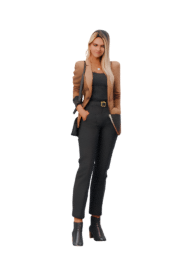
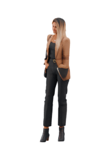
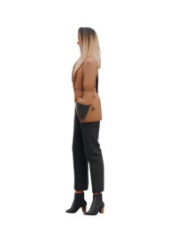
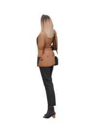
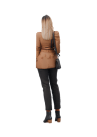
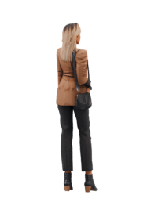
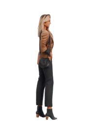
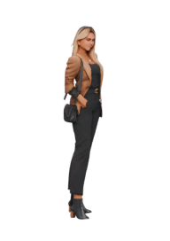

Sprites calculés depuis catia-corrected.glb. Planche de
contrôle des fichiers livrés, pas une capture iPhone. Aucun GPS simulé.
Repos

Face / sud
Sud-ouest
Ouest
Nord-ouest
Dos / nord
Nord-est
Est
Sud-est6 images au repos, 12 à la marche, 8 à la course ; animations issues du modèle existant. Rendu mobile 2,5D, sans moteur 3D sur la carte.